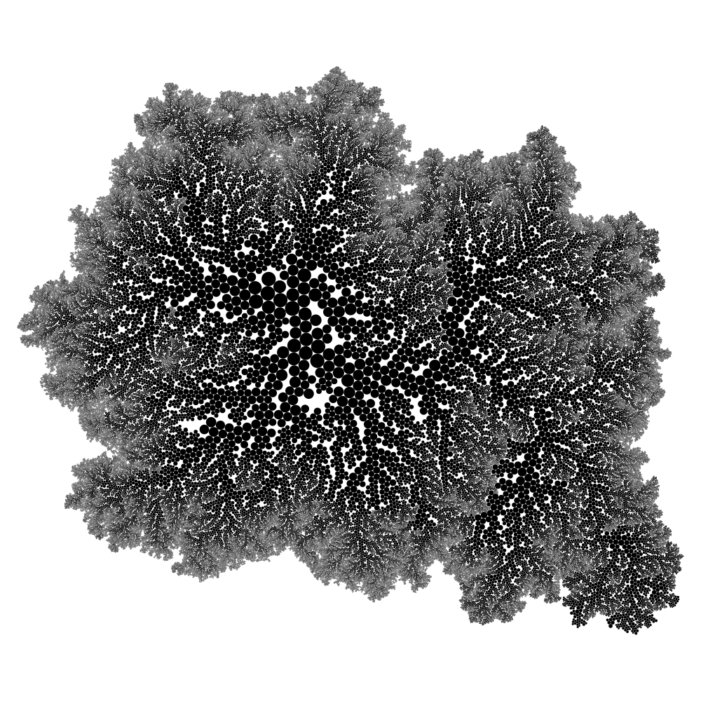
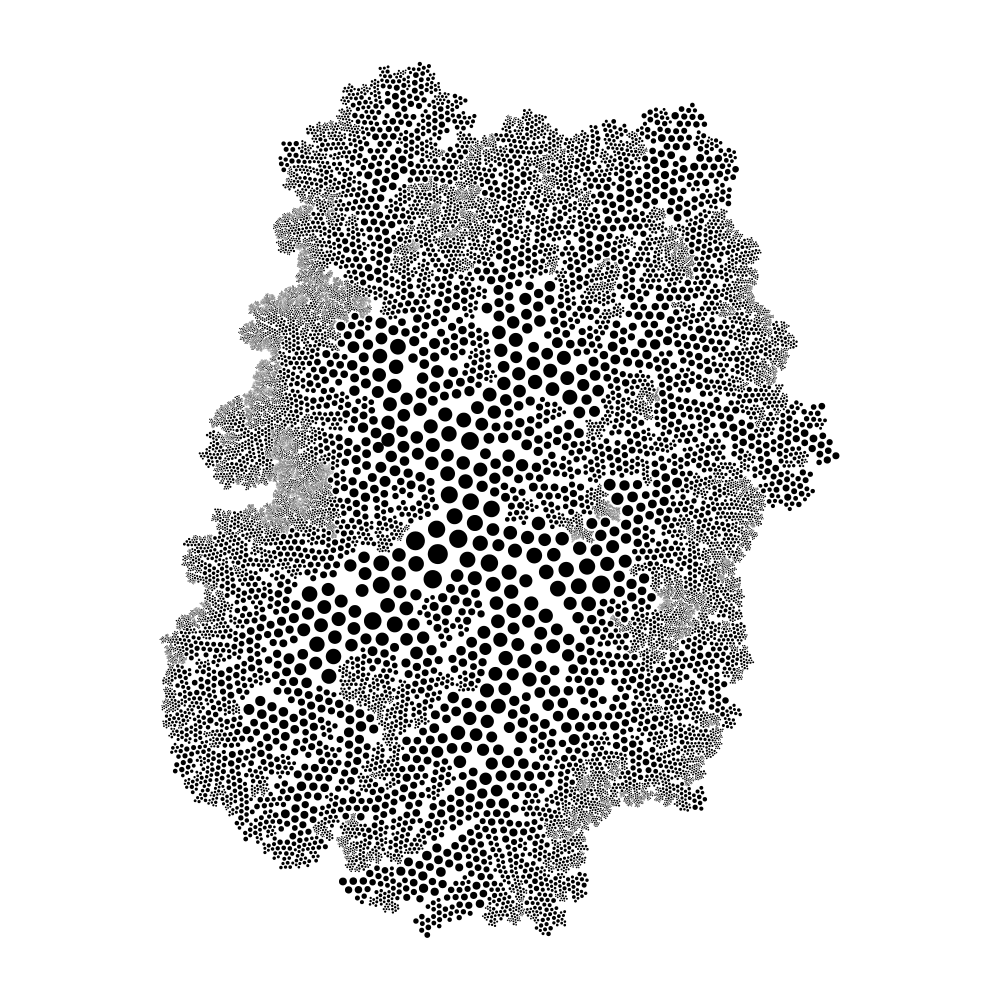
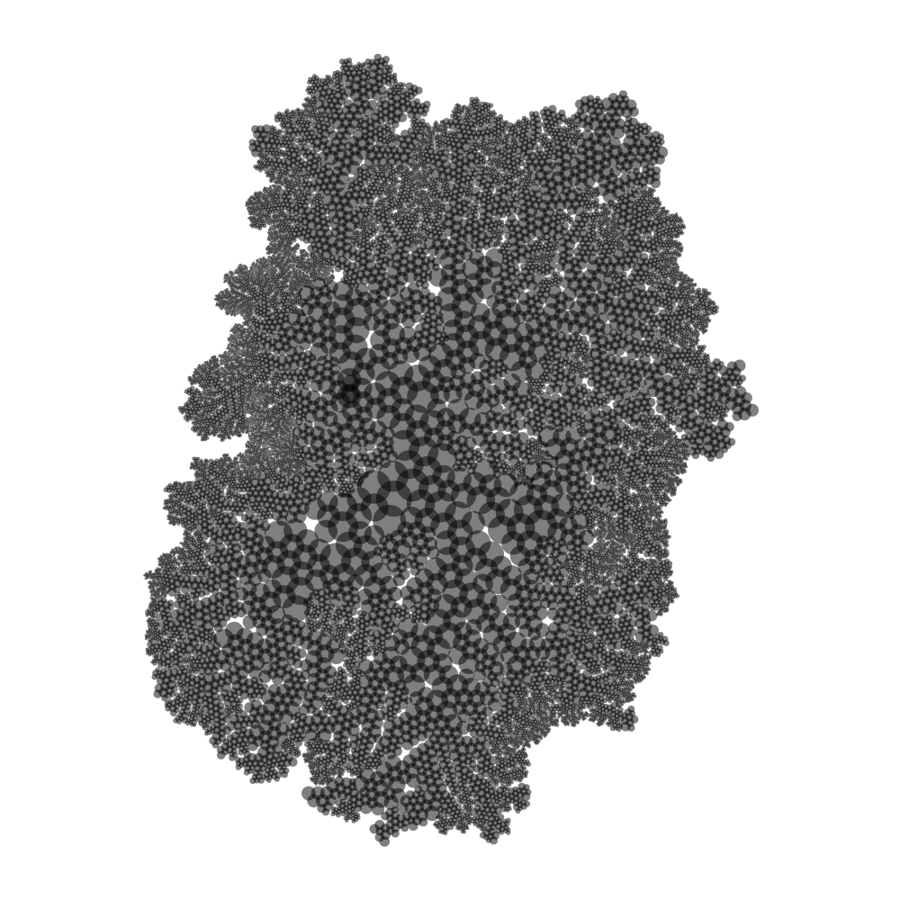
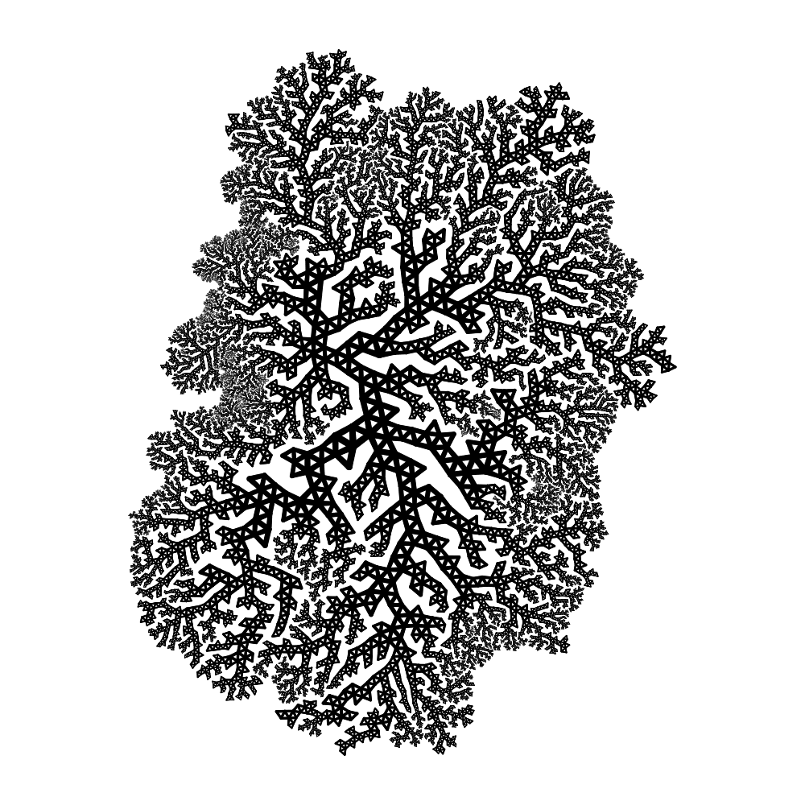
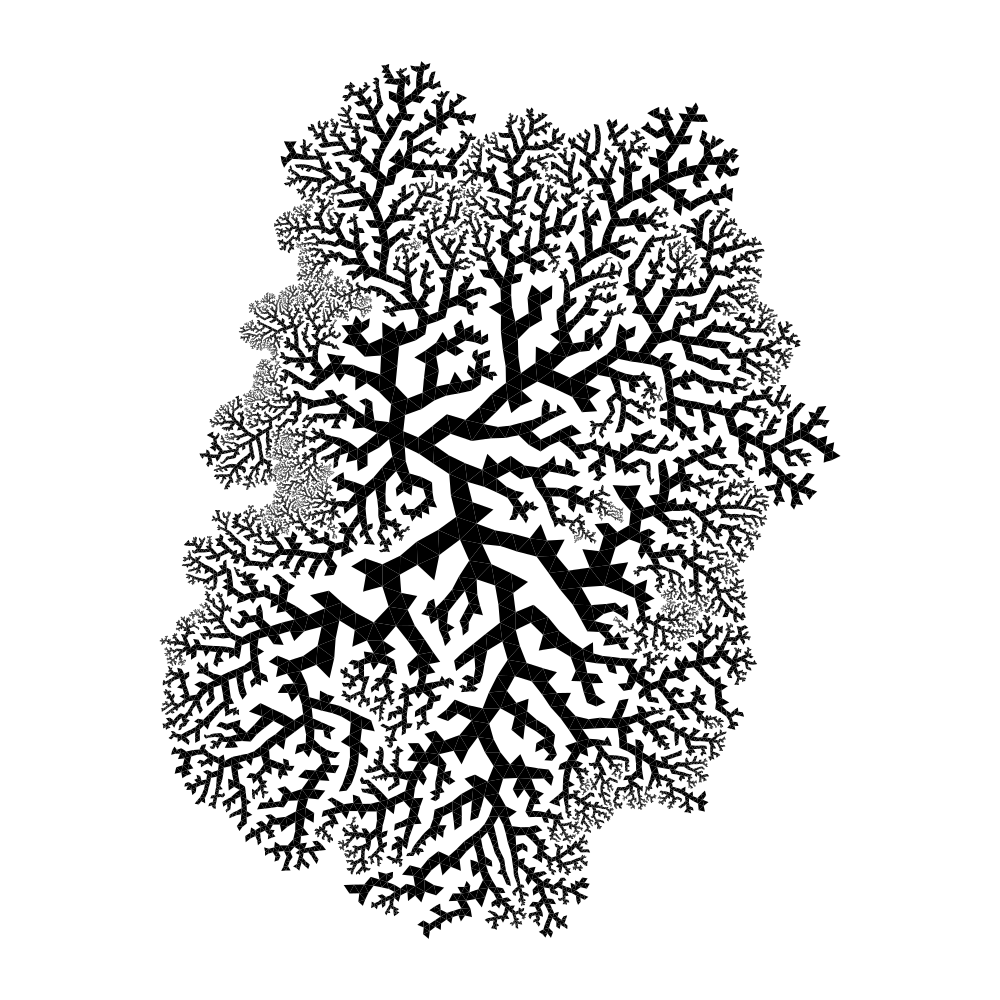
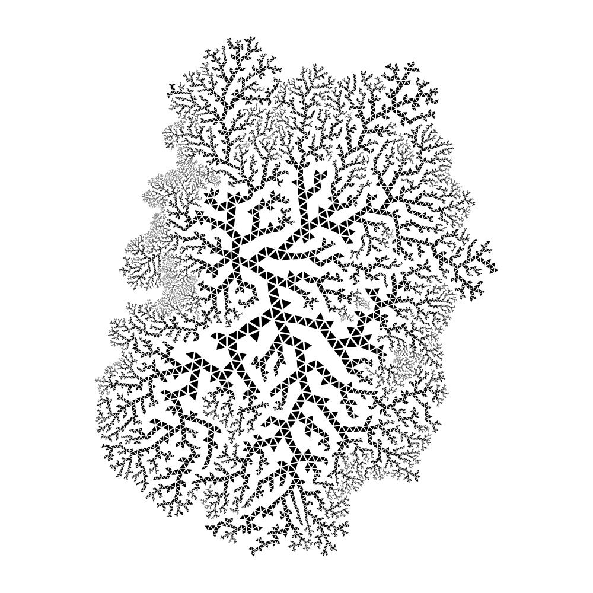
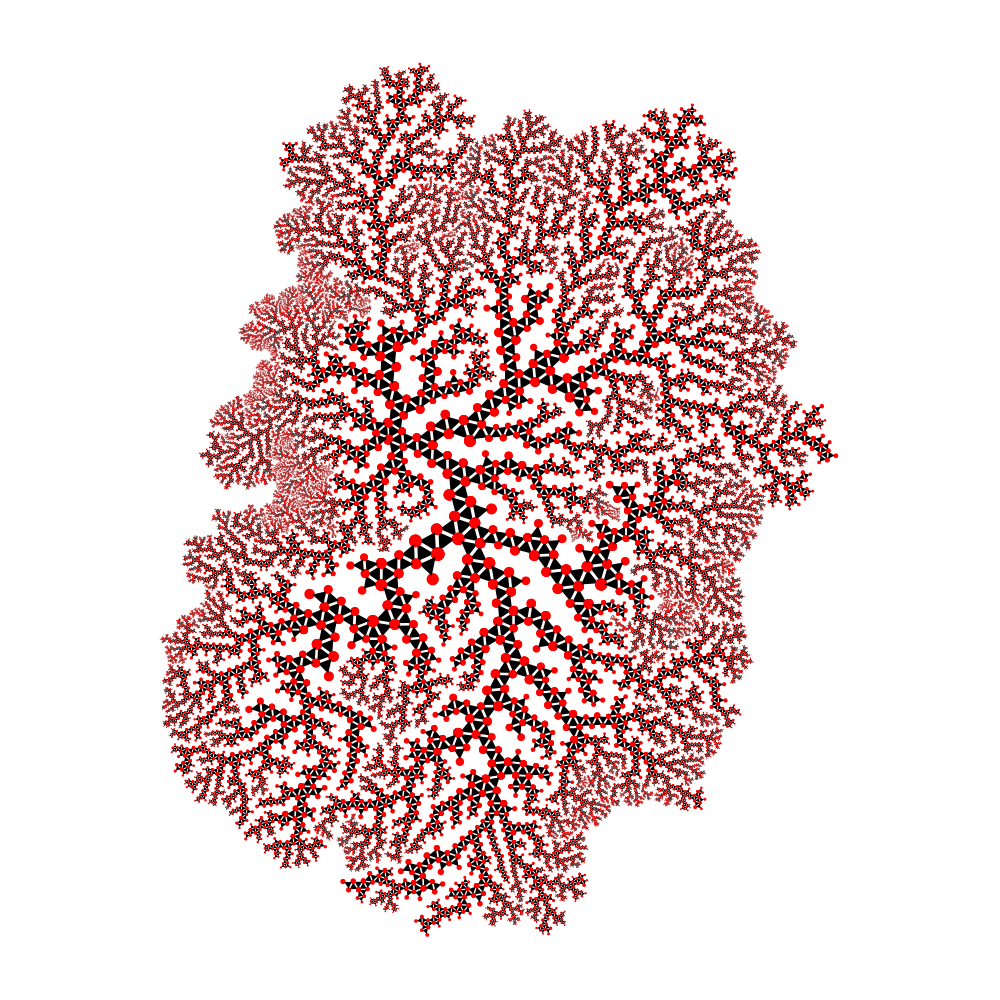
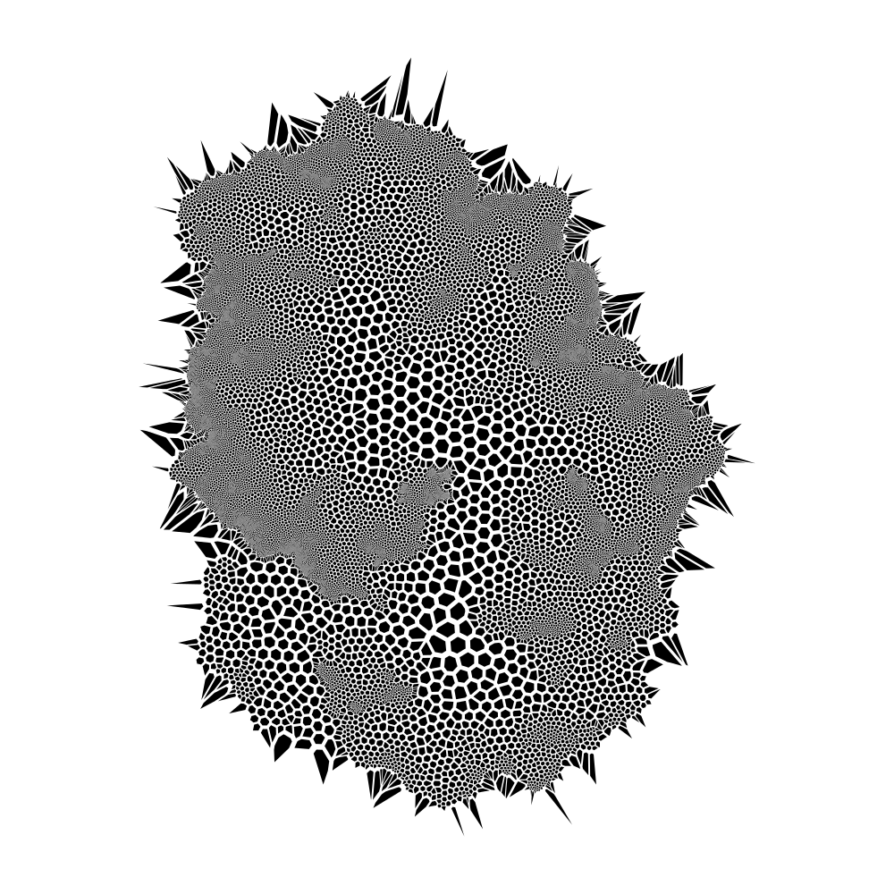
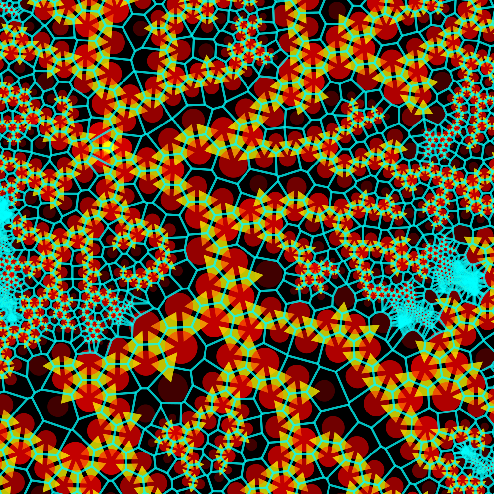

The Circle Network
In the previous articles, here and here, I described how the 2x2 circle packing algorithm can be used to generate and color circle packing patterns.
With this new tutorial, I will detail a new way to look at those patterns, and by doing so I will introduce new processes to render them.
What is a circle ?
Let's go back to one of the very first picture we generated:

If we keep on iterating a bit more, we obtain the following picture:

If you look at this picture from far or rapidly, you hardly notice the circles anymore. Instead, you only perceive a network of shapes, vaguely similar to a plant or a cloud.
Consider now that when we compute circles to generate patterns, we actually use circles for two different purposes :
Using the same circles to compute and draw the patterns is actually just a convenient shortcut. We can now try a bit harder.
Dissociation
A first thing that we can do to differentiate the 2 kinds of circles is to draw them reduced:

or expanded

Another way is to draw a line of circles between 2 adjacent circles

So far so good. But let's go a bit further.
The family triangle
The 2x2 rule consists in creating a child circle from 2 parents.
Instead of representing each member of a family by individual circles, we can instead represent the family itself by a single shape, that is as a triangle, linking each circle center:

We can shrink the triangles towards their centers:

And then mix the 2 representations, to give:

This last example is interesting because it highlights the 2 different ways we identified to draw a pattern:
And as described in the previous section, it is actually the relationships that really make the pattern.
As a consequence, we can look at other ways to represent relationships between shapes, to find new interesting ways to draw patterns. And by doing so, a very famous and ubiquitous algorithm will impose by itself, as described in the next section.
Voronoi
The Voronoi algorithm, described here, allows to pave a plan by delimiting regions nearest to a set of points. The resulting Voronoi diagram, that can be seen again and again in Nature, is made of adjacent polygons separating those regions, and centered on each point of a given set.
If we go back to our circle packing, it is very straightforward to use the centers of the circles of the pattern as the set of points to build a Voronoi diagram.
If we do so, we get:

We can improve the picture by using a trick.
Instead of filling polygons only, we can also draw their edges with a fixed width. By doing so, we will highlight the densily-packed zones, as below:

Voronoi blend
Through the previous sectiond, we have seen different ways to render a circle packing pattern:
A lot of those simple algorithms can be further extended to give very interesting results.
As a first example, we can get the following picture just by mixing the 3 representations we have studied above (circles, triangles, and voronoi):

All good ! But note however that all these pictures are for the koment based on the same kind of pattern shapes.
So in the next article, I will highlight a subtle mechanism of the 2x2 circle packing algorithm, that will be twicked to provide very different results.
Stay tuned ! A bientôt.